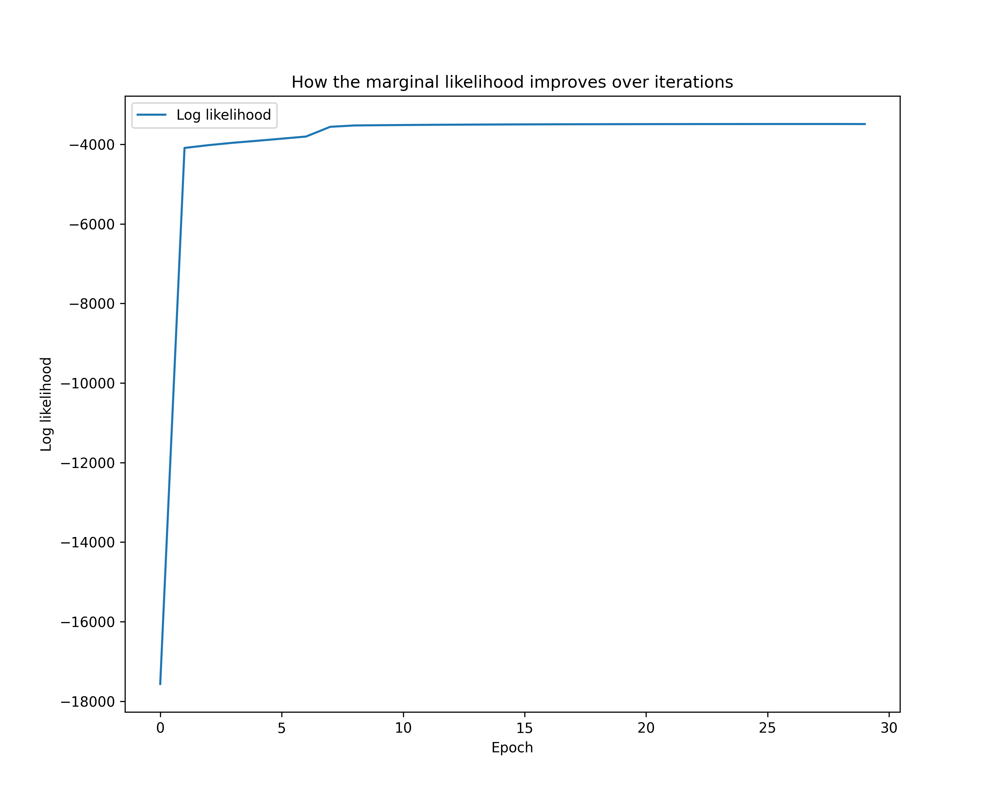

Parameter Estimation with Expectation Maximization
This is a tutorial on using cuthbert to perform parameter estimation in state-space models
with the expectation-maximization (EM) algorithm (Dempster et al. (1977)).
We use the example from experiment 14.6 in Chopin and Papaspiliopoulos (2020), which is originally from Temereanca et al. (2008). The state-space model is defined as follows:
where \(\textrm{logit\_inv}(x) = 1/(1 + e^{-x})\). The unknown static parameters are \((\rho, \sigma^{2}) \eqqcolon \theta\), where \(0 \leq \rho \leq 1\) and \(\sigma \geq 0\).
Given an observation sequence \(y_{1:T}\), our goal is to find the maximum likelihood estimate (MLE)
Crash course on EM
The EM algorithm is used to find the MLE when the marginal likelihood \(p_{\theta}(y_{1:T})\) is intractable. EM maximizes a lower bound on the log marginal likelihood known as the evidence lower bound (ELBO):
where \(q\) is an arbitrary probability distribution. The maximization is performed in two steps. In the E-step, we maximize \(Q(\theta, q)\) with respect to \(q\), and the maximizer is known analytically to be the smoothing distribution \(q^{\star} \coloneqq p_{\theta}(x_{0:T} \mid y_{1:T})\) (i.e. the posterior). Then, in the M-step, we maximize \(Q(\theta, q^{\star})\) with respect to \(\theta\), and the maximizer is our current best guess of the MLE. This process is iterated until convergence.
For more details on the use of EM for parameter estimation in state-space models, see section 14 in Chopin and Papaspiliopoulos (2020) or section 12 in Särkkä (2013).
Imports and data loading
We start by importing all the necessary modules, along with the experiment
data from Temereanca et al. (2008)
hosted in the particles
GitHub repository.
from typing import NamedTuple
import jax.numpy as jnp
import matplotlib.pyplot as plt
from jax import Array, tree, vmap
from jax.scipy.optimize import minimize
from jax.scipy.stats import binom, norm
from pandas import read_csv
from cuthbert import filter, smoother
from cuthbert.gaussian import moments
from cuthbert.gaussian.kalman import KalmanSmootherState
from cuthbertlib.quadrature.gauss_hermite import weights
# Load observation data
csv_url = "https://raw.githubusercontent.com/nchopin/particles/refs/heads/master/particles/datasets/thaldata.csv"
data = read_csv(csv_url, header=None).to_numpy()[0]
data = jnp.array(data)
# Add dummy value for initial time step (cuthbert convention is no initial observation)
data = jnp.concatenate([jnp.array([jnp.nan]), data])[..., None]
nan at the start of the data to represent there being no
observation at time \(t=0\). By setting the observation to nan, cuthbert will
know to treat this observation as missing.
Parameter specification
We then define a named tuple to hold the parameters, along with functions to convert between constrained and unconstrained formulations of \(\rho \in [0, 1]\) and \(\sigma \in [0, \infty)\). Being able to constrain and unconstrain will be useful for when we perform the M-step optimization numerically where we always want to be working with unconstrained parameters in \([-\infty, \infty]\). For more information on constraint transforms for inference, see the Stan reference manual.
class Params(NamedTuple):
rho: Array
sigma: Array
def logit(p: Array) -> Array:
# Converts [0, 1] to [-inf, inf]
return jnp.log(p / (1 - p))
def logit_inv(x: Array) -> Array:
# Converts [-inf, inf] to [0, 1]
return 1 / (1 + jnp.exp(-x))
def constrain_params(params: Array) -> Params:
return Params(
rho=logit_inv(params[0]).reshape(1),
sigma=jnp.exp(params[1]).reshape(1, 1),
)
def unconstrain_params(params: Params) -> Array:
return jnp.array([logit(params.rho.squeeze()), jnp.log(params.sigma.squeeze())])
jax.scipy.optimize.minimize
function we will use that requires array input. If we instead used
optax or another optimizer library, we
could use a named tuple instead.
Model definition
Since the SSM in (1)-(3) is nonlinear, the true posterior \(p_{\theta}(x_{0:T}
\mid y_{1:T})\) is not tractable, and so must be approximated for the E-step.
We will use one of the Gaussian-approximated filters and smoothers
provided in cuthbert, in particular the moment-based extended Kalman filter
from cuthbert.gaussian.moments.
Let's build the filter and smoother objects below that correspond to the SSM:
# Build model objects - this is where the model definition is encapsulated
def model_factory(params: Params):
def get_init_params(model_inputs: int) -> tuple[Array, Array]:
return jnp.array([0.0]), params.sigma
def get_dynamics_moments(state, model_inputs: int):
def dynamics_mean_and_chol_cov_func(x):
mean_t = jnp.where(model_inputs == 0, x, params.rho * x)
sd_t = jnp.where(model_inputs == 0, jnp.zeros_like(x), params.sigma)
return mean_t, sd_t
return dynamics_mean_and_chol_cov_func, state.mean
def get_observation_moments(state, model_inputs: int):
def observation_mean_and_chol_cov_func(x):
# Binomial parameters
n = 50
p = logit_inv(x)
mean = n * p
var = n * p * (1 - p)
sd = jnp.sqrt(var)
return mean, sd
return (
observation_mean_and_chol_cov_func,
state.mean,
data[model_inputs],
)
filter_obj = moments.build_filter(
get_init_params,
get_dynamics_moments,
get_observation_moments,
associative=False,
)
smoother_obj = moments.build_smoother(
get_dynamics_moments, store_gain=True, store_chol_cov_given_next=True
)
return filter_obj, smoother_obj
# Define model inputs
T = len(data)
model_inputs = jnp.arange(T)
gain and chol_cov_given_next matrices in the smoother state. We'll need these later
to compute integrals with respect to the joint smoothing distributions
\(p(x_{t-1}, x_t | y_{1:T})\) (by default cuthbert.gaussian.moments calculates them
but doesn't store them).
Numerial integration for the M-step
Now that we have a way to approximately solve the E-step (i.e. compute the
smoothing distribution), we need to compute
\(Q(\theta; q^{\star})\) for the M-step. However, the integral in (4) is
intractable, and hence must also be approximated. Conveniently, since we're
using a Gaussian approximation for the posterior, we can use one of the
Gaussian quadrature methods provided in cuthbertlib.quadrature
to estimate the integral. Here we use the Gauss-Hermite
quadrature
method, available in cuthbertlib.quadrature.gauss_hermite.
Note that since the optimizer we'll be using expects a loss function to minimize,
we'll define the loss as the negative ELBO \(-Q(\theta, q^{\star})\). We'll also ignore
the \(\log q(x_{0:T})\) term inside the integral for the purposes of optimization since it
doesn't depend on \(\theta\).
# Define loss function for M-step as -Q
# Use Gauss-Hermite quadrature to approximate the expectation
gauss_hermite_order = 10
quadrature_1d = weights(1, order=gauss_hermite_order)
quadrature_2d = weights(2, order=gauss_hermite_order)
def loss_fn(unconstrained_params: Array, ys: Array, smooth_dist: KalmanSmootherState):
params = constrain_params(unconstrained_params)
def loss_initial(m, chol_cov):
# E_{p(x_0 | m, chol_cov)} [log N(x_0 | 0, params.sigma^2)]
sigma_points = quadrature_1d.get_sigma_points(m, chol_cov)
# points.shape=wm.shape=wc.shape=(gauss_hermite_order, 1)
return jnp.dot(
sigma_points.wm,
norm.logpdf(
sigma_points.points,
0.0,
params.sigma,
),
)
def loss_dynamics(m_joint, chol_cov_joint):
# E_{p(x_{t-1}, x_t | m_joint, chol_cov_joint)} [log N(x_t | rho * x_{t-1}, params.sigma^2)]
sigma_points = quadrature_2d.get_sigma_points(m_joint, chol_cov_joint)
# points.shape=wm.shape=wc.shape=(gauss_hermite_order, 2)
return jnp.dot(
sigma_points.wm,
norm.logpdf(
sigma_points.points[:, 0],
sigma_points.points[:, 1] * params.rho,
params.sigma.squeeze(),
),
)
def loss_observation(m, chol_cov, y):
# E_{x_t | m, chol_cov)} [log Bin(y_t | 50, logit_inv(x_t))]
sigma_points = quadrature_1d.get_sigma_points(m, chol_cov)
return jnp.dot(
sigma_points.wm,
binom.logpmf(y, 50, logit_inv(sigma_points.points)),
)
joint_means = jnp.concatenate([smooth_dist.mean[:-1], smooth_dist.mean[1:]], axis=1)
def construct_joint_chol_cov(chol_cov_t_plus_1, gain_t, chol_cov_t_given_t_plus_1):
return jnp.block(
[
[chol_cov_t_plus_1, jnp.zeros_like(chol_cov_t_plus_1)],
[gain_t @ chol_cov_t_plus_1, chol_cov_t_given_t_plus_1],
]
)
joint_chol_covs = vmap(construct_joint_chol_cov)(
smooth_dist.chol_cov[1:],
smooth_dist.gain[:-1],
smooth_dist.chol_cov_given_next[:-1],
)
total_loss = (
loss_initial(smooth_dist.mean[0], smooth_dist.chol_cov[0]).squeeze()
+ vmap(loss_dynamics)(joint_means, joint_chol_covs).sum()
+ vmap(loss_observation)(
smooth_dist.mean[1:], smooth_dist.chol_cov[1:], ys[1:]
).sum()
)
return -total_loss
Run EM
We now have all the building blocks necessary to perform EM. All that is left
is to put the E and M-steps into a loop. In the code block below, we use the
BFGS algorithm
provided by jax.scipy.optimize.minimize for the M-step for simplicity (the
optax library provides several
other optimizers which you might want to use in practice).
# Initialize parameters
rho_init = 0.1
sig_init = 0.5**0.5
params = Params(rho=jnp.array([rho_init]), sigma=jnp.array([[sig_init]]))
params_track = tree.map(lambda x: x[None], params)
log_marginal_likelihood_track = []
n_epochs = 30
for epoch in range(n_epochs):
filter_obj, smoother_obj = model_factory(params)
filtered_states = filter(filter_obj, model_inputs)
log_marginal_likelihood_track.append(filtered_states.log_normalizing_constant[-1])
smoother_states = smoother(smoother_obj, filtered_states)
optim_result = minimize(
loss_fn,
unconstrain_params(params),
args=(data, smoother_states),
method="BFGS",
)
params = constrain_params(optim_result.x)
params_track = tree.map(
lambda x, y: jnp.concatenate([x, y[None]], axis=0), params_track, params
)
print(f"Epoch {epoch + 1}/{n_epochs}: log marginal likelihood = {log_marginal_likelihood_track[-1]}")
All done! We can now visualize the learning curve with some plots.
Code to plot the results.
# Plot log likelihood
plt.figure(figsize=(10, 8))
plt.plot(log_marginal_likelihood_track, label="Log likelihood")
plt.xlabel("Epoch")
plt.ylabel("Log likelihood")
plt.legend()
plt.title("How the marginal likelihood improves over iterations")
plt.savefig("docs/assets/em_log_likelihood.png", dpi=300)
# Plot parameters
true_mle = (0.9981, 0.1089**0.5)
plt.figure(figsize=(10, 8))
plt.plot(
params_track.rho.squeeze(),
params_track.sigma.squeeze(),
marker="o",
linestyle="-",
label="EM",
zorder=0,
)
plt.scatter(
true_mle[0], true_mle[1], color="red", marker="x", label="True MLE", zorder=1, s=100
)
plt.xlabel("rho")
plt.ylabel("sigma")
plt.legend()
plt.title("EM iterates compared to the true MLE")
plt.savefig("docs/assets/em_parameters.png", dpi=300)


We know the true MLE in this example (marked in red in the above figure). Note
that EM converges to the vicinity of the true value but not exactly, because
both our E and M-steps are approximated. Both these approximations can be
improved, say by replacing the Gaussian-approximated filter and smoother with
asymptotically unbiased particle approximations (see
cuthbert.smc), or by
increasing the order of the Gauss-Hermite quadrature.
Key Takeaways
- EM algorithm integration:
cuthbert's filtering and smoothing capabilities integrate seamlessly with the EM algorithm for parameter estimation in state-space models. - Gaussian approximation: The moment-based extended Kalman filter provides an efficient Gaussian approximation to the intractable posterior, enabling tractable E-steps.
- Quadrature for M-step: Gaussian quadrature methods from
cuthbertlib.quadratureenable efficient approximation of the M-step integrals when using Gaussian approximations. - Flexible parameter constraints: The constraint/unconstraint pattern allows optimization in unconstrained space while maintaining parameter bounds (e.g., \(\rho \in [0,1]\), \(\sigma \geq 0\)).
- Approximate inference: Both E and M-steps use approximations, but the approximations can be improved by using particle filters/smoothers or higher-order quadrature.
Next Steps
- Particle-based EM: Replace the Gaussian approximation with particle filters
and smoothers from
cuthbert.smcfor asymptotically unbiased parameter estimates. - Other optimization methods: Explore gradient-based optimization with
optaxfor the M-step, or use stochastic gradient EM for large datasets. - More examples: Check out other examples including online particle filtering and Kalman tracking.